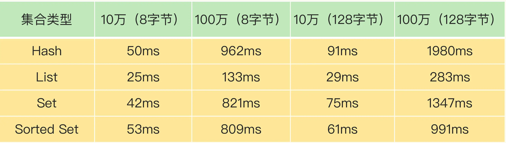
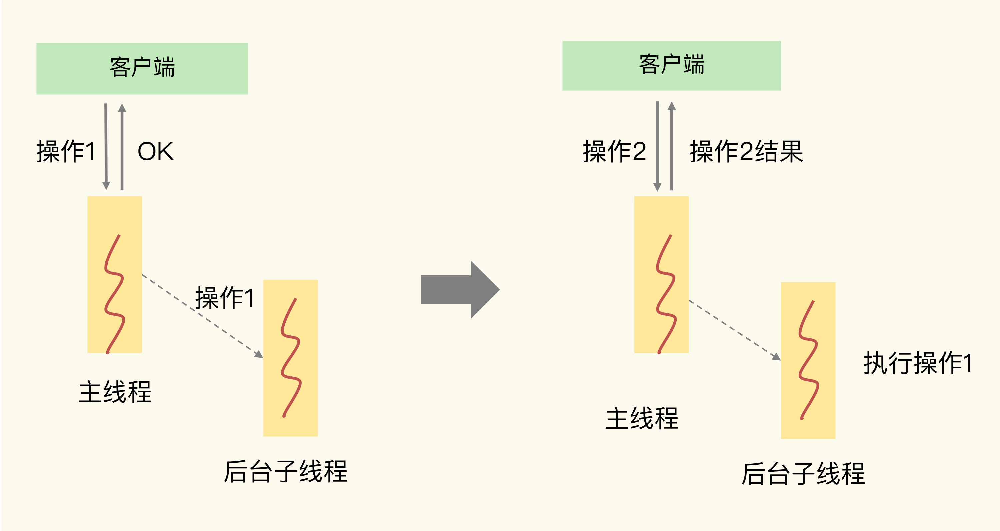
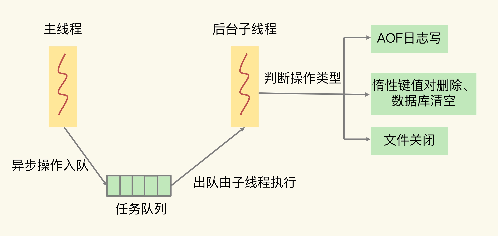

- 00 开篇词 这样学Redis，才能技高一筹.md.html
- 01 基本架构：一个键值数据库包含什么？.md.html
- 02 数据结构：快速的Redis有哪些慢操作？.md.html
- 03 高性能IO模型：为什么单线程Redis能那么快？.md.html
- 04 AOF日志：宕机了，Redis如何避免数据丢失？.md.html
- 05 内存快照：宕机后，Redis如何实现快速恢复？.md.html
- 06 数据同步：主从库如何实现数据一致？.md.html
- 07 哨兵机制：主库挂了，如何不间断服务？.md.html
- 08 哨兵集群：哨兵挂了，主从库还能切换吗？.md.html
- 09 切片集群：数据增多了，是该加内存还是加实例？.md.html
- 10 第1～9讲课后思考题答案及常见问题答疑.md.html
- 11 “万金油”的String，为什么不好用了？.md.html
- 12 有一亿个keys要统计，应该用哪种集合？.md.html
- 13 GEO是什么？还可以定义新的数据类型吗？.md.html
- 14 如何在Redis中保存时间序列数据？.md.html
- 15 消息队列的考验：Redis有哪些解决方案？.md.html
- 16 异步机制：如何避免单线程模型的阻塞？.md.html
- 17 为什么CPU结构也会影响Redis的性能？.md.html
- 18 波动的响应延迟：如何应对变慢的Redis？（上）.md.html
- 19 波动的响应延迟：如何应对变慢的Redis？（下）.md.html
- 20 删除数据后，为什么内存占用率还是很高？.md.html
- 21 缓冲区：一个可能引发“惨案”的地方.md.html
- 22 第11～21讲课后思考题答案及常见问题答疑.md.html
- 23 旁路缓存：Redis是如何工作的？.md.html
- 24 替换策略：缓存满了怎么办？.md.html
- 25 缓存异常（上）：如何解决缓存和数据库的数据不一致问题？.md.html
- 26 缓存异常（下）：如何解决缓存雪崩、击穿、穿透难题？.md.html
- 27 缓存被污染了，该怎么办？.md.html
- 28 Pika：如何基于SSD实现大容量Redis？.md.html
- 29 无锁的原子操作：Redis如何应对并发访问？.md.html
- 30 如何使用Redis实现分布式锁？.md.html
- 31 事务机制：Redis能实现ACID属性吗？.md.html
- 32 Redis主从同步与故障切换，有哪些坑？.md.html
- 33 脑裂：一次奇怪的数据丢失.md.html
- 34 第23~33讲课后思考题答案及常见问题答疑.md.html
- 35 Codis VS Redis Cluster：我该选择哪一个集群方案？.md.html
- 36 Redis支撑秒杀场景的关键技术和实践都有哪些？.md.html
- 37 数据分布优化：如何应对数据倾斜？.md.html
- 38 通信开销：限制Redis Cluster规模的关键因素.md.html
- 39 Redis 6.0的新特性：多线程、客户端缓存与安全.md.html
- 40 Redis的下一步：基于NVM内存的实践.md.html
- 41 第35～40讲课后思考题答案及常见问题答疑.md.html
- 加餐 01 经典的Redis学习资料有哪些？.md.html
- 加餐 02 用户Kaito：我是如何学习Redis的？.md.html
- 加餐 03 用户Kaito：我希望成为在压力中成长的人.md.html
- 加餐 04 Redis客户端如何与服务器端交换命令和数据？.md.html
- 加餐 05 Redis有哪些好用的运维工具？.md.html
- 加餐 06 Redis的使用规范小建议.md.html
- 加餐 07 从微博的Redis实践中，我们可以学到哪些经验？.md.html
- 结束语 从学习Redis到向Redis学习.md.html
- 捐赠
16 异步机制：如何避免单线程模型的阻塞？
Redis 之所以被广泛应用，很重要的一个原因就是它支持高性能访问。也正因为这样，我们必须要重视所有可能影响 Redis 性能的因素（例如命令操作、系统配置、关键机制、硬件配置等），不仅要知道具体的机制，尽可能避免性能异常的情况出现，还要提前准备好应对异常的方案。
所以，从这节课开始，我会用 6 节课的时间介绍影响 Redis 性能的 5 大方面的潜在因素，分别是：
- Redis 内部的阻塞式操作；
- CPU 核和 NUMA 架构的影响；
- Redis 关键系统配置；
- Redis 内存碎片；
- Redis 缓冲区。
这节课，我们就先学习了解下 Redis 内部的阻塞式操作以及应对的方法。
在【第 3 讲】中，我们学习过，Redis 的网络 IO 和键值对读写是由主线程完成的。那么，如果在主线程上执行的操作消耗的时间太长，就会引起主线程阻塞。但是，Redis 既有服务客户端请求的键值对增删改查操作，也有保证可靠性的持久化操作，还有进行主从复制时的数据同步操作，等等。操作这么多，究竟哪些会引起阻塞呢？
别着急，接下来，我就带你分门别类地梳理下这些操作，并且找出阻塞式操作。
Redis 实例有哪些阻塞点？
Redis 实例在运行时，要和许多对象进行交互，这些不同的交互就会涉及不同的操作，下面我们来看看和 Redis 实例交互的对象，以及交互时会发生的操作。
- 客户端：网络 IO，键值对增删改查操作，数据库操作；
- 磁盘：生成 RDB 快照，记录 AOF 日志，AOF 日志重写；
- 主从节点：主库生成、传输 RDB 文件，从库接收 RDB 文件、清空数据库、加载 RDB 文件；
- 切片集群实例：向其他实例传输哈希槽信息，数据迁移。
为了帮助你理解，我再画一张图来展示下这 4 类交互对象和具体的操作之间的关系。

接下来，我们来逐个分析下在这些交互对象中，有哪些操作会引起阻塞。
1. 和客户端交互时的阻塞点
网络 IO 有时候会比较慢，但是 Redis 使用了 IO 多路复用机制，避免了主线程一直处在等待网络连接或请求到来的状态，所以，网络 IO 不是导致 Redis 阻塞的因素。
键值对的增删改查操作是 Redis 和客户端交互的主要部分，也是 Redis 主线程执行的主要任务。所以，复杂度高的增删改查操作肯定会阻塞 Redis。
那么，怎么判断操作复杂度是不是高呢？这里有一个最基本的标准，就是看操作的复杂度是否为 O(N)。
Redis 中涉及集合的操作复杂度通常为 O(N)，我们要在使用时重视起来。例如集合元素全量查询操作 HGETALL、SMEMBERS，以及集合的聚合统计操作，例如求交、并和差集。这些操作可以作为 Redis 的第一个阻塞点：集合全量查询和聚合操作。
除此之外，集合自身的删除操作同样也有潜在的阻塞风险。你可能会认为，删除操作很简单，直接把数据删除就好了，为什么还会阻塞主线程呢？
其实，删除操作的本质是要释放键值对占用的内存空间。你可不要小瞧内存的释放过程。释放内存只是第一步，为了更加高效地管理内存空间，在应用程序释放内存时，操作系统需要把释放掉的内存块插入一个空闲内存块的链表，以便后续进行管理和再分配。这个过程本身需要一定时间，而且会阻塞当前释放内存的应用程序，所以，如果一下子释放了大量内存，空闲内存块链表操作时间就会增加，相应地就会造成 Redis 主线程的阻塞。
那么，什么时候会释放大量内存呢？其实就是在删除大量键值对数据的时候，最典型的就是删除包含了大量元素的集合，也称为 bigkey 删除。为了让你对 bigkey 的删除性能有一个直观的印象，我测试了不同元素数量的集合在进行删除操作时所消耗的时间，如下表所示：

从这张表里，我们可以得出三个结论：
- 当元素数量从 10 万增加到 100 万时，4 大集合类型的删除时间的增长幅度从 5 倍上升到了近 20 倍；
- 集合元素越大，删除所花费的时间就越长；
- 当删除有 100 万个元素的集合时，最大的删除时间绝对值已经达到了 1.98s（Hash 类型）。Redis 的响应时间一般在微秒级别，所以，一个操作达到了近 2s，不可避免地会阻塞主线程。
经过刚刚的分析，很显然，bigkey 删除操作就是 Redis 的第二个阻塞点。删除操作对 Redis 实例性能的负面影响很大，而且在实际业务开发时容易被忽略，所以一定要重视它。
既然频繁删除键值对都是潜在的阻塞点了，那么，在 Redis 的数据库级别操作中，清空数据库（例如 FLUSHDB 和 FLUSHALL 操作）必然也是一个潜在的阻塞风险，因为它涉及到删除和释放所有的键值对。所以，这就是 Redis 的第三个阻塞点：清空数据库。
2. 和磁盘交互时的阻塞点
我之所以把 Redis 与磁盘的交互单独列为一类，主要是因为磁盘 IO 一般都是比较费时费力的，需要重点关注。
幸运的是，Redis 开发者早已认识到磁盘 IO 会带来阻塞，所以就把 Redis 进一步设计为采用子进程的方式生成 RDB 快照文件，以及执行 AOF 日志重写操作。这样一来，这两个操作由子进程负责执行，慢速的磁盘 IO 就不会阻塞主线程了。
但是，Redis 直接记录 AOF 日志时，会根据不同的写回策略对数据做落盘保存。一个同步写磁盘的操作的耗时大约是 1～2ms，如果有大量的写操作需要记录在 AOF 日志中，并同步写回的话，就会阻塞主线程了。这就得到了 Redis 的第四个阻塞点了：AOF 日志同步写。
3. 主从节点交互时的阻塞点
在主从集群中，主库需要生成 RDB 文件，并传输给从库。主库在复制的过程中，创建和传输 RDB 文件都是由子进程来完成的，不会阻塞主线程。但是，对于从库来说，它在接收了 RDB 文件后，需要使用 FLUSHDB 命令清空当前数据库，这就正好撞上了刚才我们分析的第三个阻塞点。
此外，从库在清空当前数据库后，还需要把 RDB 文件加载到内存，这个过程的快慢和 RDB 文件的大小密切相关，RDB 文件越大，加载过程越慢，所以，加载 RDB 文件就成为了 Redis 的第五个阻塞点。
4. 切片集群实例交互时的阻塞点
最后，当我们部署 Redis 切片集群时，每个 Redis 实例上分配的哈希槽信息需要在不同实例间进行传递，同时，当需要进行负载均衡或者有实例增删时，数据会在不同的实例间进行迁移。不过，哈希槽的信息量不大，而数据迁移是渐进式执行的，所以，一般来说，这两类操作对 Redis 主线程的阻塞风险不大。
不过，如果你使用了 Redis Cluster 方案，而且同时正好迁移的是 bigkey 的话，就会造成主线程的阻塞，因为 Redis Cluster 使用了同步迁移。我将在第 33 讲中向你介绍不同切片集群方案对数据迁移造成的阻塞的解决方法，这里你只需要知道，当没有 bigkey 时，切片集群的各实例在进行交互时不会阻塞主线程，就可以了。
好了，你现在已经了解了 Redis 的各种关键操作，以及其中的阻塞式操作，我们来总结下刚刚找到的五个阻塞点：
- 集合全量查询和聚合操作；
- bigkey 删除；
- 清空数据库；
- AOF 日志同步写；
- 从库加载 RDB 文件。
如果在主线程中执行这些操作，必然会导致主线程长时间无法服务其他请求。为了避免阻塞式操作，Redis 提供了异步线程机制。所谓的异步线程机制，就是指，Redis 会启动一些子线程，然后把一些任务交给这些子线程，让它们在后台完成，而不再由主线程来执行这些任务。使用异步线程机制执行操作，可以避免阻塞主线程。
不过，这个时候，问题来了：这五大阻塞式操作都可以被异步执行吗？
哪些阻塞点可以异步执行？
在分析阻塞式操作的异步执行的可行性之前，我们先来了解下异步执行对操作的要求。
如果一个操作能被异步执行，就意味着，它并不是 Redis 主线程的关键路径上的操作。我再解释下关键路径上的操作是啥。这就是说，客户端把请求发送给 Redis 后，等着 Redis 返回数据结果的操作。
这么说可能有点抽象，我画一张图片来解释下。

主线程接收到操作 1 后，因为操作 1 并不用给客户端返回具体的数据，所以，主线程可以把它交给后台子线程来完成，同时只要给客户端返回一个“OK”结果就行。在子线程执行操作 1 的时候，客户端又向 Redis 实例发送了操作 2，而此时，客户端是需要使用操作 2 返回的数据结果的，如果操作 2 不返回结果，那么，客户端将一直处于等待状态。
在这个例子中，操作 1 就不算关键路径上的操作，因为它不用给客户端返回具体数据，所以可以由后台子线程异步执行。而操作 2 需要把结果返回给客户端，它就是关键路径上的操作，所以主线程必须立即把这个操作执行完。
对于 Redis 来说，读操作是典型的关键路径操作，因为客户端发送了读操作之后，就会等待读取的数据返回，以便进行后续的数据处理。而 Redis 的第一个阻塞点“集合全量查询和聚合操作”都涉及到了读操作，所以，它们是不能进行异步操作了。
我们再来看看删除操作。删除操作并不需要给客户端返回具体的数据结果，所以不算是关键路径操作。而我们刚才总结的第二个阻塞点“bigkey 删除”，和第三个阻塞点“清空数据库”，都是对数据做删除，并不在关键路径上。因此，我们可以使用后台子线程来异步执行删除操作。
对于第四个阻塞点“AOF 日志同步写”来说，为了保证数据可靠性，Redis 实例需要保证 AOF 日志中的操作记录已经落盘，这个操作虽然需要实例等待，但它并不会返回具体的数据结果给实例。所以，我们也可以启动一个子线程来执行 AOF 日志的同步写，而不用让主线程等待 AOF 日志的写完成。
最后，我们再来看下“从库加载 RDB 文件”这个阻塞点。从库要想对客户端提供数据存取服务，就必须把 RDB 文件加载完成。所以，这个操作也属于关键路径上的操作，我们必须让从库的主线程来执行。
对于 Redis 的五大阻塞点来说，除了“集合全量查询和聚合操作”和“从库加载 RDB 文件”，其他三个阻塞点涉及的操作都不在关键路径上，所以，我们可以使用 Redis 的异步子线程机制来实现 bigkey 删除，清空数据库，以及 AOF 日志同步写。
那么，Redis 实现的异步子线程机制具体是怎么执行呢？
异步的子线程机制
Redis 主线程启动后，会使用操作系统提供的 pthread_create 函数创建 3 个子线程，分别由它们负责 AOF 日志写操作、键值对删除以及文件关闭的异步执行。
主线程通过一个链表形式的任务队列和子线程进行交互。当收到键值对删除和清空数据库的操作时，主线程会把这个操作封装成一个任务，放入到任务队列中，然后给客户端返回一个完成信息，表明删除已经完成。
但实际上，这个时候删除还没有执行，等到后台子线程从任务队列中读取任务后，才开始实际删除键值对，并释放相应的内存空间。因此，我们把这种异步删除也称为惰性删除（lazy free）。此时，删除或清空操作不会阻塞主线程，这就避免了对主线程的性能影响。
和惰性删除类似，当 AOF 日志配置成 everysec 选项后，主线程会把 AOF 写日志操作封装成一个任务，也放到任务队列中。后台子线程读取任务后，开始自行写入 AOF 日志，这样主线程就不用一直等待 AOF 日志写完了。
下面这张图展示了 Redis 中的异步子线程执行机制，你可以再看下，加深印象。

这里有个地方需要你注意一下，异步的键值对删除和数据库清空操作是 Redis 4.0 后提供的功能，Redis 也提供了新的命令来执行这两个操作。
- 键值对删除：当你的集合类型中有大量元素（例如有百万级别或千万级别元素）需要删除时，我建议你使用 UNLINK 命令。
- 清空数据库：可以在 FLUSHDB 和 FLUSHALL 命令后加上 ASYNC 选项，这样就可以让后台子线程异步地清空数据库，如下所示：
FLUSHDB ASYNC
FLUSHALL AYSNC
小结
这节课，我们学习了 Redis 实例运行时的 4 大类交互对象：客户端、磁盘、主从库实例、切片集群实例。基于这 4 大类交互对象，我们梳理了会导致 Redis 性能受损的 5 大阻塞点，包括集合全量查询和聚合操作、bigkey 删除、清空数据库、AOF 日志同步写，以及从库加载 RDB 文件。
在这 5 大阻塞点中，bigkey 删除、清空数据库、AOF 日志同步写不属于关键路径操作，可以使用异步子线程机制来完成。Redis 在运行时会创建三个子线程，主线程会通过一个任务队列和三个子线程进行交互。子线程会根据任务的具体类型，来执行相应的异步操作。
不过，异步删除操作是 Redis 4.0 以后才有的功能，如果你使用的是 4.0 之前的版本，当你遇到 bigkey 删除时，我给你个小建议：先使用集合类型提供的 SCAN 命令读取数据，然后再进行删除。因为用 SCAN 命令可以每次只读取一部分数据并进行删除，这样可以避免一次性删除大量 key 给主线程带来的阻塞。
例如，对于 Hash 类型的 bigkey 删除，你可以使用 HSCAN 命令，每次从 Hash 集合中获取一部分键值对（例如 200 个），再使用 HDEL 删除这些键值对，这样就可以把删除压力分摊到多次操作中，那么，每次删除操作的耗时就不会太长，也就不会阻塞主线程了。
最后，我想再提一下，集合全量查询和聚合操作、从库加载 RDB 文件是在关键路径上，无法使用异步操作来完成。对于这两个阻塞点，我也给你两个小建议。
- 集合全量查询和聚合操作：可以使用 SCAN 命令，分批读取数据，再在客户端进行聚合计算；
- 从库加载 RDB 文件：把主库的数据量大小控制在 2~4GB 左右，以保证 RDB 文件能以较快的速度加载。
每课一问
按照惯例，我给你提一个小问题：我们今天学习了关键路径上的操作，你觉得，Redis 的写操作（例如 SET、HSET、SADD 等）是在关键路径上吗？
欢迎在留言区写下你的思考和答案，我们一起交流讨论。如果你觉得今天的内容对你有所帮助，也欢迎你帮我分享给更多人，我们下节课见。
© 2019 - 2023 Liangliang Lee. Powered by gin and hexo-theme-book.